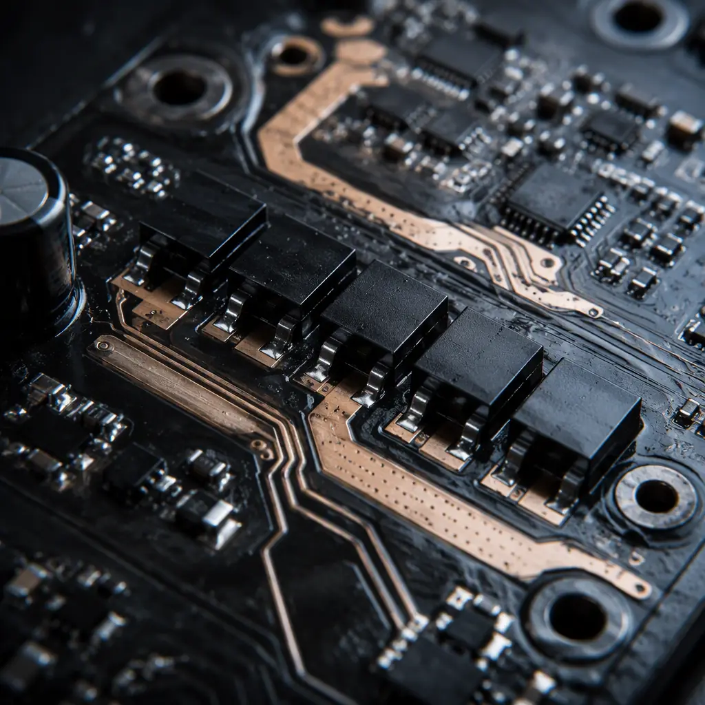
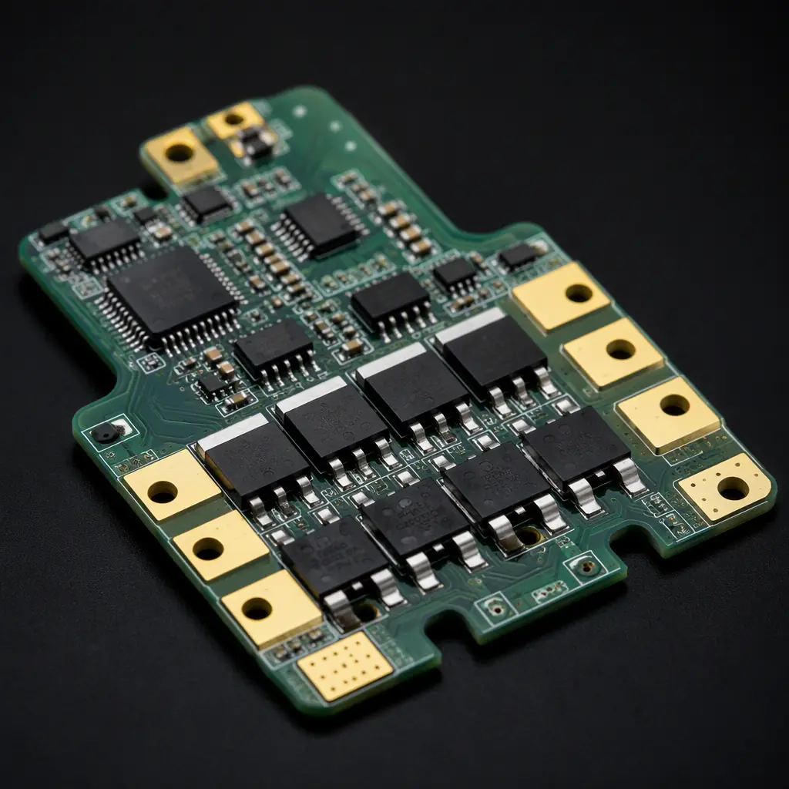
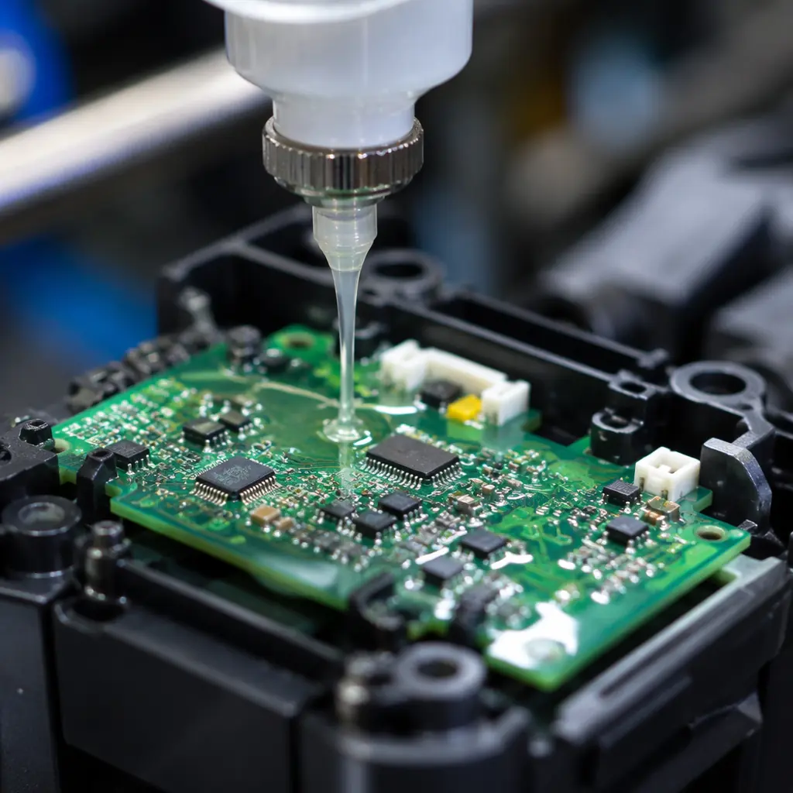

The global cordless power tool market is projected to exceed $45 billion by 2028, driven by lithium-ion battery adoption and the shift from brushed to brushless DC (BLDC) motors. Every modern power tool — from a cordless drill to a professional-grade angle grinder — contains at least two critical PCBs: a motor controller board handling 20-100A current switching, and a battery management system (BMS) board monitoring cell balance and temperature. These boards operate in one of the harshest environments in all of electronics: constant vibration, rapid temperature swings, dust and moisture ingress, and physical shock from tool drops.
Designing PCBs for power tools requires a different engineering mindset than consumer electronics. The failure mode isn't a frozen screen — it's a 20,000 RPM angle grinder losing motor control while in the operator's hands. At Huaxing PCBA, we've manufactured power tool control boards for OEMs across North America and Europe, with experience spanning 6oz heavy copper designs and IP65 conformal coating requirements. This guide covers the four critical design domains that determine whether your power tool PCB survives or fails in the field.

Motor Controller PCB Design: High Current, High Frequency
The heart of any cordless tool is the BLDC motor controller — a 6-MOSFET three-phase inverter bridge switching at 15-30 kHz. This board has unique PCB requirements that general-purpose design rules don't address:
Copper Weight: 3oz Minimum for Power Traces
The current loop from battery positive through the MOSFET bridge to the motor phases carries 20-80A continuous on professional tools. Standard 1oz copper cannot handle this without excessive I²R heating and voltage drop. Use 3-4oz outer layer copper with trace widths of at least 8mm for the main current path. Inner layers can use 2oz if properly thermal-via'd to outer copper. For detailed copper selection criteria, see our PCB copper weight selection guide.
Kelvin Connections for Current Sensing
BLDC motor control relies on precise phase current measurement through shunt resistors (typically 1-5mΩ). The voltage drop across a shunt at 40A is only 40-200mV — a few milliohms of trace resistance between the shunt and the amplifier input creates a 5-15% measurement error. Use true 4-wire Kelvin connections: separate force and sense traces from each shunt terminal directly to the current-sense amplifier pins. Do not share the high-current path with the sense path.
Gate Drive Trace Layout — Minimize Loop Inductance
The MOSFET gate drive loop (driver IC → gate resistor → MOSFET gate → source → driver ground) must have minimal loop area. Parasitic inductance in this loop causes gate voltage ringing during switching transitions, which can falsely turn on the opposing MOSFET (shoot-through) and destroy the bridge in microseconds. Keep the gate drive loop under 15mm total path length, place gate resistors directly at the MOSFET gate pin, and use a dedicated return trace directly beneath the gate trace on an adjacent layer.
DC Link Capacitor Placement
The electrolytic and ceramic capacitors that filter the DC bus must be placed as close as physically possible to the MOSFET bridge — within 10mm of the drain-source terminals. These capacitors supply the high-frequency ripple current during PWM switching. Every millimeter of trace between the capacitor and the MOSFET adds inductance that defeats the capacitor's filtering. Use multiple parallel low-ESR ceramics (X7R, 1-10µF) directly at each half-bridge, plus bulk aluminum electrolytics for low-frequency decoupling. Our thermal management guide covers heat dissipation strategies for these high-density layouts.
Key Takeaway: The difference between a power tool PCB that lasts 500 hours and one that lasts 5,000 hours is in the layout details — Kelvin connections, gate loop inductance, and capacitor placement. These can't be fixed by component selection alone.

Battery Management System PCB Design
Cordless power tools use 18V/20V max (5S) or 36V/40V max (10S) Li-ion packs with capacities from 2.0 to 12.0 Ah. The BMS board inside each pack must perform cell voltage monitoring, balancing, overcurrent protection, and temperature monitoring — all on a compact PCB that fits inside the battery housing.
| BMS Requirement | 5S/18V Pack | 10S/36V Pack | PCB Design Implication |
|---|---|---|---|
| Continuous discharge | 30-60A | 40-80A | 3-4oz copper, multiple parallel layers for power path |
| Cell balancing current | 50-200mA | 50-200mA | Balance resistors require thermal relief to inner copper planes |
| Protection FET Rds(on) | 2-4mΩ total | 3-6mΩ total | FETs placed symmetrically for even current sharing |
| Cell voltage sensing | 5 differential pairs | 10 differential pairs | Kelvin sense traces; avoid routing near switching nodes |
| NTC temperature sensing | 2-3 NTC thermistors | 3-4 NTC thermistors | NTCs placed between cells for accurate thermal monitoring |
For more on battery management PCB design for higher voltage systems, see our EV BMS PCB design guide — many of the same principles apply at a larger scale.
Vibration and Mechanical Stress Mitigation
Power tools experience vibration levels that consumer electronics never see. A hammer drill generates 20-40 m/s² of acceleration at the handle. An angle grinder transmits 8,000-12,000 RPM vibration directly through the housing to the PCB mounting points. This isn't a comfort issue — it's a solder joint reliability issue.
Conformal Coating Is Mandatory, Not Optional
Power tool PCBs need conformal coating for two reasons: moisture protection (IPX4-IP65 rating) and vibration damping at solder joints. The coating — typically acrylic or silicone-based — provides mechanical support to component leads and prevents fretting corrosion at connector contacts. Specify 50-75µm coating thickness for general-purpose tools, 100-150µm for outdoor equipment. Our conformal coating guide covers material selection and application methods in detail.
Component Mounting Orientation Relative to Vibration Axis
Large components (electrolytic capacitors, inductors, MOSFETs with heatsinks) should be oriented so that the vibration axis is perpendicular to the component's long dimension. A tall electrolytic capacitor mounted parallel to the vibration axis acts as a cantilever, concentrating stress at its two solder joints. Mount it perpendicular instead, and use additional adhesive (RTV silicone) for components taller than 15mm.
PCB Mounting and Edge Clearance
The PCB should be supported at minimum 4 points — not just screwed down at the corners. Mounting bosses should be positioned near heavy components (inductors, large connectors). Maintain at least 3mm clearance between any component and the PCB edge; the board edge experiences the highest strain during flexing. For boards larger than 50×50mm, use at least 1.6mm board thickness (2.0mm preferred for professional tools).
Procurement Tip: When specifying power tool PCBs, explicitly require vibration testing to IEC 60068-2-6 (10-500 Hz sweep, 10g) and mechanical shock to IEC 60068-2-27 (50g, 11ms half-sine). These should be standard qualification tests, not optional extras.

Thermal Management in a Sealed Enclosure
Power tool PCBs live inside sealed plastic housings with zero airflow. The motor itself generates 50-150W of heat during continuous operation, and the MOSFET bridge on the control board adds another 5-15W. With no ventilation, board temperatures can reach 85-105°C at the MOSFET junctions.
The primary thermal path in a power tool is conduction through the PCB copper to the housing, not convection to air. This means:
- Use metal-core PCB (MCPCB) or thick copper (≥3oz) inner planes as heat spreaders
- Place thermal vias (0.3mm drill, 1.0mm pitch grid) under each MOSFET drain pad, connecting to a copper plane on the opposite side
- If the housing has a metal insert or heatsink boss, design the PCB to make physical contact at that location with thermal interface material
- MOSFETs should be derated to 60% of their 25°C current rating when operating at expected board temperatures
For a deeper analysis of high-current thermal design, see our guides on PCB thermal management and heavy copper PCB manufacturing.
Summary: The Power Tool PCB Specification Checklist
When sending an RFQ for power tool PCB assembly, include these specifications on your fabrication drawing:
Copper: 3oz minimum on power layers, 2oz on signal layers
Solder mask: matte black or green, high-temperature rated (≥130°C Tg)
Conformal coating: acrylic, 50-100µm, full board coverage except connectors
Testing: 100% AOI + flying probe or ICT + functional test at rated load
Qualification: vibration (IEC 60068-2-6), thermal cycling (-20°C to +85°C, 100 cycles)
At Huaxing PCBA, our heavy copper capability supports up to 6oz outer layers for power tool motor control boards, with automated conformal coating lines for volume production. We perform 100% AOI inspection and functional testing on every power electronics board. Contact our engineering team with your Gerber files and BOM for a same-day design review and quotation.